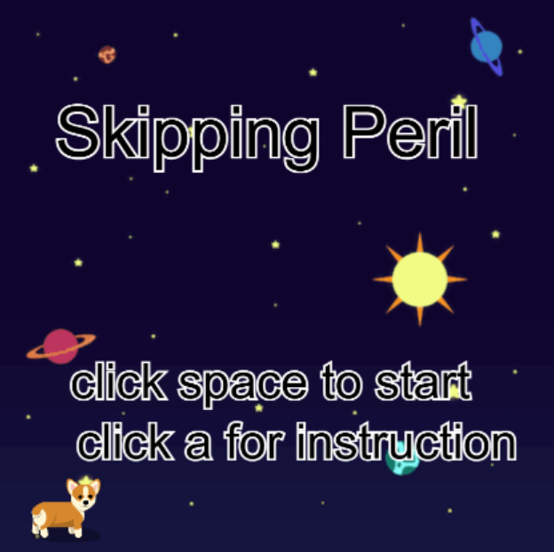
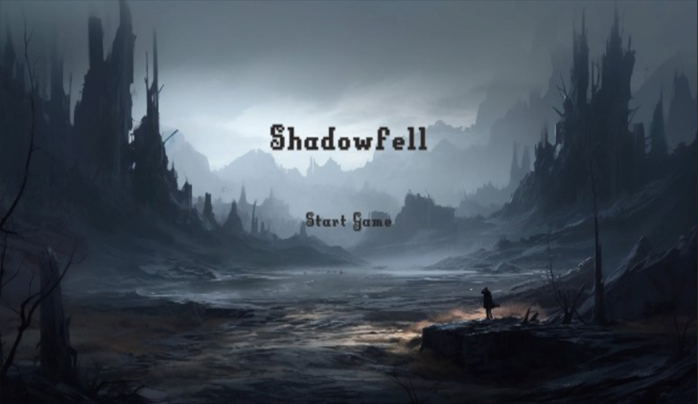

My Projects

Skipping Peril
A game created for a Code.org activity where players earn points but must avoid dangers.

Shadowfell - A 2D RPG
An immersive RPG experience with diverse biomes and challenging enemies.

Studio Ghibli Tribute
A personal homage to the storytelling and artistry of Studio Ghibli’s masterpieces.